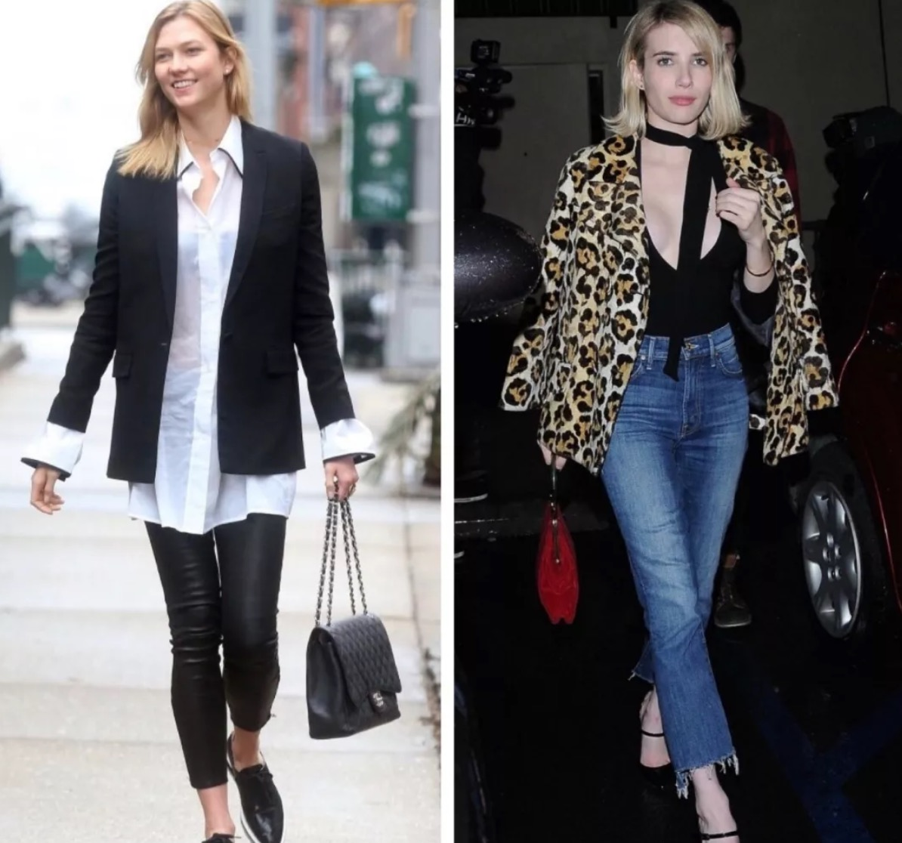
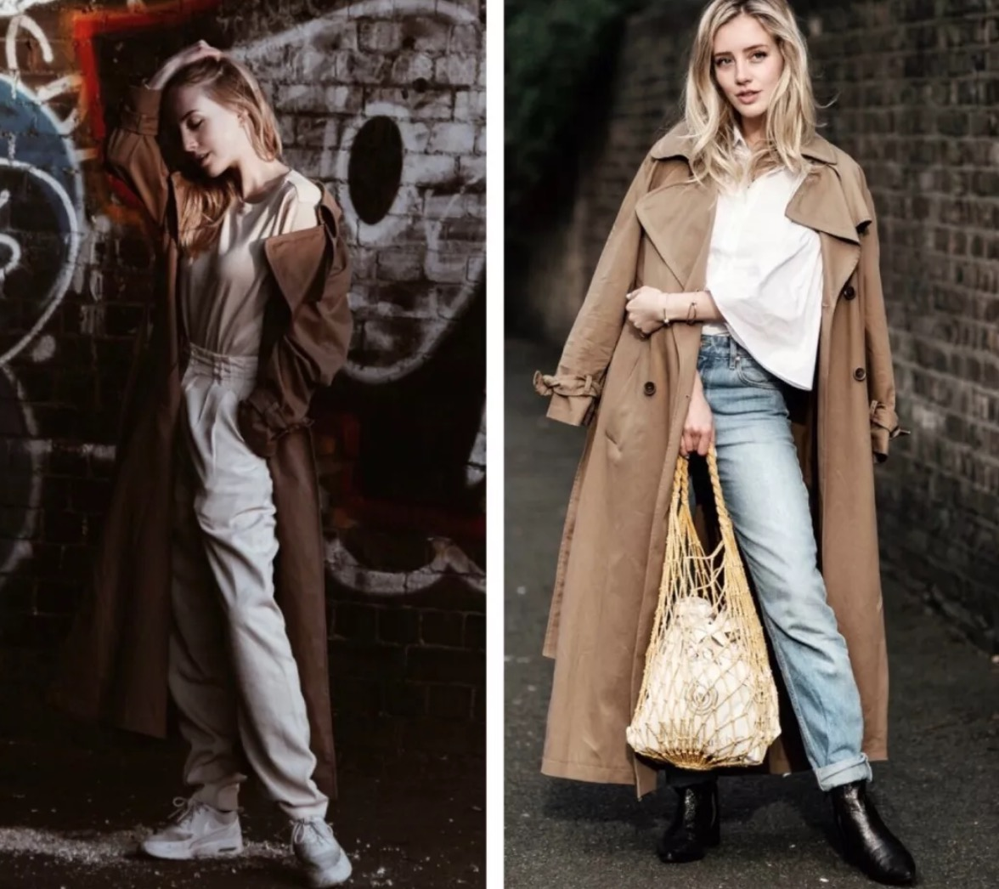
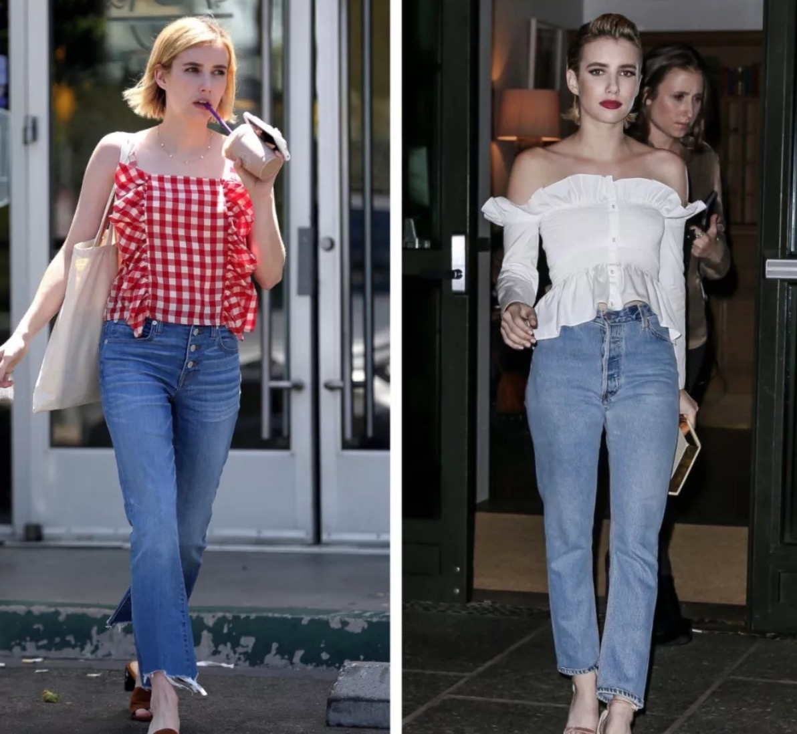
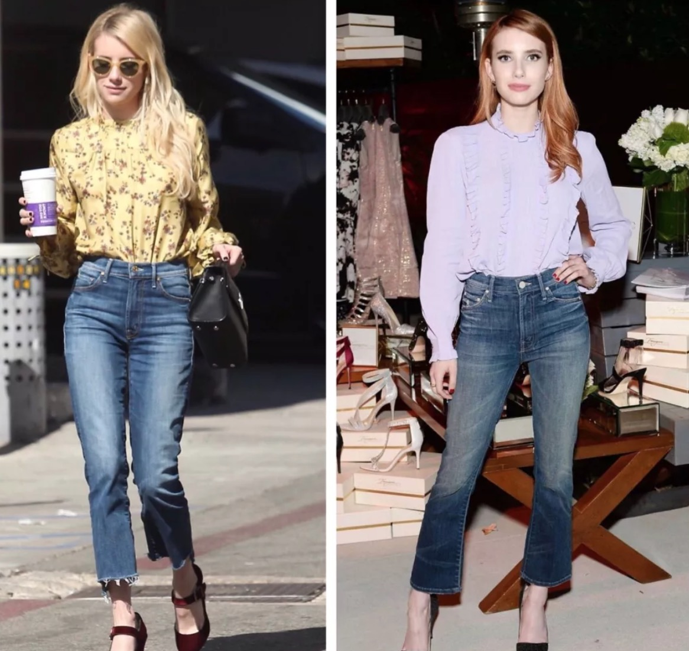
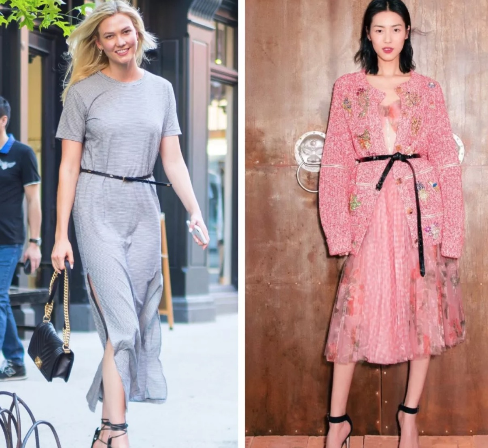
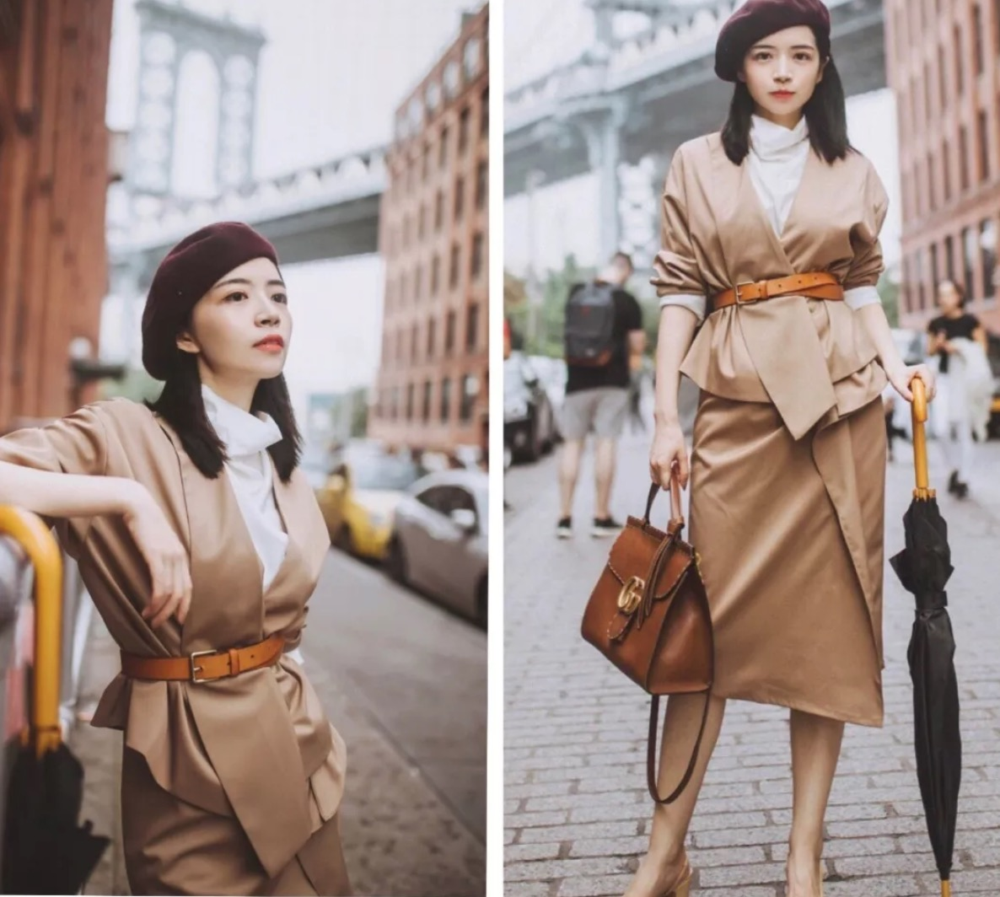

身材比例好对于穿衣来说实在太重要了，就像我们羡慕170+的高个儿，也并不单纯因为她们高，而是她们通常更容易穿出好比例。 不过185cm的超模Karlie Kloss也在把自己穿成55分的时候，并没有只有158cm但很会穿衣的Emma Roberts看起来更高挑。
选择对的单品，小个子也能让自己的比例凸显，看起来腿长又好看。

让自己看起来比例更好、更显高，除了单纯的“踩高跷”，还是有很多更巧妙的方式，今天就和大家分享衣橱里不可或缺的6件显高单品。
露肩上衣
露肩上衣在视觉上会让我们的上半身看起来更短，从而让整体的比例变得更好。个人喜欢露肩上衣的两种穿法儿， 一是搭配高腰裤，裤子可以是牛仔裤或阔腿裤，它们与露肩上衣的组合让人看起来腰短腿长，比例特别好。 二是搭配半裙和高跟鞋，是非常优雅的风格，露肩针织衫与鱼尾裙的组合，显得人既很美又有曲线，很有女人味。
长裙和长大衣
如果你想要让一个东西看起来很修长，那就要让它看起来很流畅，它的色调和形状最好都保持一致。而长裙正好是这样的存在，它在视觉上让人感觉没有分割感。 长度在膝盖下面几cm的长大衣也是一样，不过最显矮的大衣长度是卡在膝盖上面一点点的，而当衣长过了膝盖许多，它会又神奇的很显高了。
一些知名的小个子时尚博主，比如152cm的Sarah Mikaela，她们早就发现长大衣显高这个事实了。 Sarah穿的超长款风衣，衣长要到脚踝了，虽然她努力踮起脚尖，还是能看出来她并不高，但穿长大衣让她看起来是个修长的小个子

高腰牛仔裤，喇叭裤
Emma Roberts可以说是小个子里最会穿的女明星了，她选牛仔裤的眼光也特别好，我平日里也超爱牛仔裤，所以一直会关注她的穿搭。

Emma穿的牛仔裤几乎都是高腰的，因为高腰裤显腿长呀，小个子穿高腰牛仔裤就对了。 Emma的牛仔裤中我觉得最适合普通人参考的有这几条。一是她之前特别喜欢穿的高腰破洞牛仔裤， 二是大家很熟悉的九分微喇牛仔裤，微喇牛仔裤非常好穿，它几乎不挑腿型而且很时髦，无论是搭配正式的衬衫还是休闲的针织衫都很好看。

腰带
拥有超模身材的KK和刘雯，在穿不凸显腰线设计的裙子时都会主动在高腰的位置加上一条腰带，让自己的比例看起来更好。

而对于本身就没有大长腿的我们来说，腰带就显得更重要了。 我很喜欢的一位base在上海的时尚博主（微博@三木三木呢），就非常擅长使用腰带调整比例，三木的身高虽只有162，但看起来却远远不止哦。

腰带除了能改善整体的比例之外，还可以增加我们穿衣的层次感。
三木说自己有上百条腰带，所以说，快去买几条腰带吧，它真的是非常显高又显腿长的配饰哦。
小鱼儿
2 Dec 2018, 10:20 AM
不是小个子的我也收藏了，很多推荐的单品都我都喜欢！
回复作者回复
2 Dec 2018, 13:55 PM
偷笑偷笑偷笑☺️
一三一三
2 Dec 2018, 10:20 PM
都是衣柜必备了，高腰半裙高腰阔腿裤，衬衫或T恤直接塞进去，简单又超好看der。
我只是一道风景
2 Dec 2018, 11:30 PM
三本超好看，我超喜欢。作为155的小个子，我这几年也觉得及膝裙和过膝大衣反而比短的流畅自然，更显高。
回复我只是一道风景
2 Dec 2018, 11:55 PM
人只有在接纳自己的时候才会感觉更快乐，自信和好看。
回复